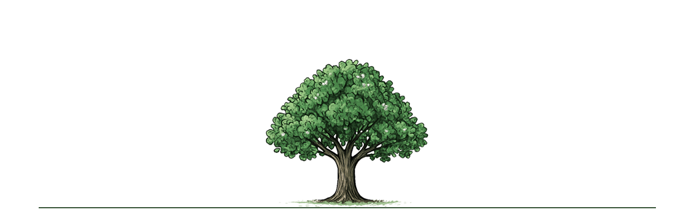
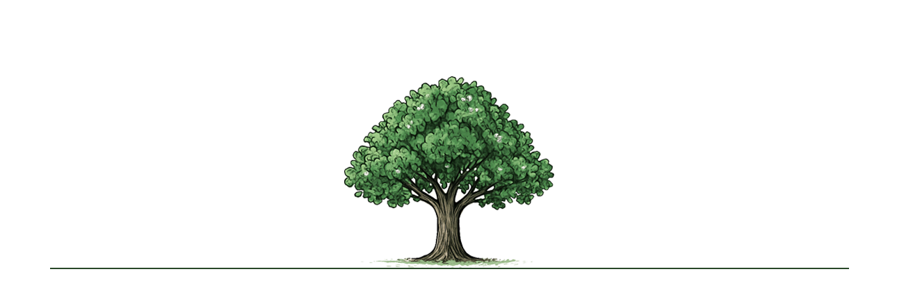

Open The Perception Path Open The Perception Path Open The Perception Path
Let Sensis help you perceive yourself
Let Sensis help you perceive yourself
Let Sensis help you perceive yourself
and achieve your goals faster
and achieve your goals faster
and achieve your goals faster
User Basic Information 用户基础信息 基本情報
Please answer the questions below. Use ○ for single choice and □ for multiple choice. 请回答以下问题。单选用 ○，多选用 □。 以下の質問にお答えください。単一選択は○、複数選択は□です。
Purpose of Questions (for internal use) 问题目的（内部使用） 設問の目的（内部利用）
-
A (A1–A6): System
A (A1–A6)：系统
A (A1–A6)：システム
Demographic baseline, credentials, major, time status. 人口基线、学历、专业、时间状态。 人口学的基盤、学歴、専攻、時間状況。 -
B (B1–B6): Personal
B (B1–B6)：个人
B (B1–B6)：パーソナル
Interests, goals, habits, task preferences, obstacles, MBTI. 兴趣、目标、习惯、任务偏好、障碍、MBTI。 関心、目標、習慣、課題選好、障害、MBTI。 -
C (C1–C6): Situation
C (C1–C6)：情境
C (C1–C6)：状況
Available time, weekly pattern, devices, channels, support, environment, lifestyle. 可支配时间、每周模式、设备、渠道、支持、环境、生活方式。 利用可能な時間、週間パターン、デバイス、チャネル、支援、環境、ライフスタイル。
FAQ 常见问题 よくある質問
Why do we collect this data? 为什么要收集这些数据？ なぜこのデータを収集するのですか？
We collect data to understand users’ backgrounds, study habits, and needs, in order to improve research support and learning guidance. 我们收集这些数据是为了了解用户的背景、学习习惯和需求，以便改进研究支持与学习指导。 本データは、利用者の背景・学習習慣・ニーズを把握し、研究支援や学習指導の改善に役立てるために収集されます。
Can I skip a question? 我可以跳过问题吗？ 質問を飛ばしてもいいですか？
Yes. Incomplete answers may reduce the accuracy of your results, but the form remains valid. 可以。不完整的回答可能会降低结果的准确性，但表格依然有效。 はい。不完全な回答は結果の精度を下げる可能性がありますが、フォームは有効です。
Why ask about age/education/major? 为什么要问年龄/学历/专业？ なぜ年齢／学歴／専攻を聞くのですか？
To understand structural context shaping planning and access. 用于理解影响规划与机会的结构性背景。 計画やアクセスを規定する構造的背景を把握するためです。
How will my data be used? 我的数据将如何使用？ 私のデータはどのように使われますか？
Responses will be anonymized and used only for Sensis research and user's personal goal path setting. 回答将被匿名化，仅用于 Sensis 的研究和用户的个人目标路径设定。 回答は匿名化され、Sensis の調査とユーザーの個人的な目標パスの設定にのみ使用されます。
How will my data be stored? 我的数据会如何存储？ データはどのように保存されますか？
All responses will be stored securely in encrypted databases with restricted access. 所有问卷答案将安全存储在加密数据库中，并限制访问权限。 すべての回答は、暗号化されたデータベースに安全に保存され、アクセスは制限されます。
Will my personal identity be revealed? 我的个人身份会被公开吗？ 個人情報は公開されますか？
No. All data will be anonymized and used only for aggregated analysis. 不会。所有数据将进行匿名化处理，仅用于总体分析。 いいえ。すべてのデータは匿名化され、集計分析のみに使用されます。
Can I withdraw my data later? 我以后可以撤回数据吗？ 後からデータを撤回できますか？
Yes. You may contact the research team at any time to request data deletion. 可以。您可以随时联系研究团队，要求删除您的数据。 はい。研究チームに連絡することで、いつでもデータ削除を依頼できます。
Who can I contact for questions? 有问题可以联系谁？ 質問がある場合は誰に連絡すればよいですか？
Please contact the project research team via email: sensis-team@example.com 如有问题，请通过电子邮件联系项目研究团队：sensis-team@example.com ご質問は次のメールへ：sensis-team@example.com